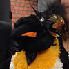

Stefanov Escapealov
Grad: Major
Stefanov er broren til Svetlana, og er til daglig Escape sin beskytter. Han tar gjerne en dram (eller ti) med de interne og andre studenter.
I løpet av 43-gallaen ble Stefanov berget av Uglebo. I et helt år satt han i fangenskap og måtte tåle sjikane og slibrige tilnærminger fra Ugly, som mest trolig var misunnelig på hans robuste fjærdrakt! (Det er iallefall hva han forteller oss fra affæren. Uglebo er av en annen oppfatning, og fremstiller det som at alt gikk ordentlig for seg.) Heldigvis kom han til rette på 44-gallaen, og har siden da vært i trygge omgivelser i Escape.